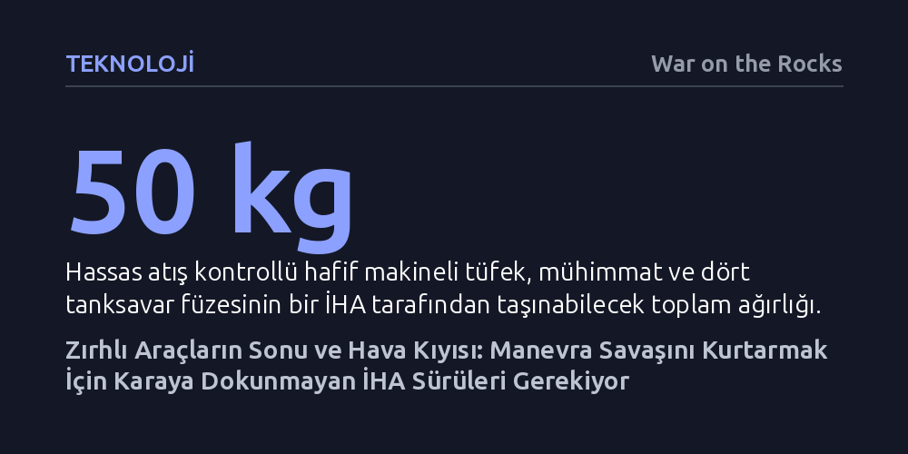

TEKNOLOJI · War on the Rocks · 2026-10-09
Ukrayna'daki yıpratma savaşını aşmanın yolu zırhlı araçları İHA'larla korumak değil, onların yerini karaya dokunmadan hareket eden otonom İHA sürüleriyle değiştirmektir. Manevra kabiliyetini ancak arazi engellerine takılmayan, yapay zekâ kontrollü bu hava kıyısı platformları yeniden sağlayabilir.
Geleceğin kara savaşını zırh kalınlığının değil, karaya hiç temas etmeyen otonom İHA sürülerinin hız ve arazi bağımsızlığının belirleyeceğini gösteriyor.

Ukrayna savaşında ortaya çıkan tablo, Birinci Dünya Savaşı'nın ilk aylarında yaşanan şok edici kilitlenmeyi hatırlatıyor. 1914 yılında ordular hareket ve manevra kabiliyeti üzerine kurulu planlarla savaşa girmiş, ancak makineli tüfeklerin ve ağır topçunun açık arazideki her türlü hareketi imkânsız kılmasıyla hızla siperlere gömülmüştü. Günümüzde benzer bir felç hali Ukrayna cephesinde yaşanıyor; alçak irtifayı dolduran hassas güdümlü insansız hava araçları ve otonom sistemler, cephe hattına yaklaşan tüm tankları ve zırhlı araçları anında tespit edip imha ediyor. Piyadenin veya mekanize birliklerin her türlü taarruz girişimi, daha başlangıç çizgisinde ağır bir yıpratma savaşına dönüşüyor.
Bu açmaz karşısında Batılı askeri liderlerin ve özellikle ABD ordusunun geliştirdiği çözüm planı, tarihteki bir yanılgıyı birebir tekrarlama tehlikesi taşıyor. Mevcut doktrin, geleceğin zırhlı birliklerine yol açmak ve onların ilerlemesini korumak için yoğun İHA ateş gücü kullanmayı öngörüyor. Yani İHA sürüleri bir tür kalkan ve hazırlık ateşi işlevi görecek, ardından arkadan gelen geleneksel tanklar manevrayla düşman hattını yaracak. Oysa Birinci Dünya Savaşı'nda da ordu komutanları benzer bir mantıkla devasa topçu barajları kurmuş, felsefelerini "topçu fetheder, piyade işgal eder" ilkesine dayandırmıştı.
Tarih, bu yaklaşımın neden felaketle sonuçlandığını açıkça belgeliyor. Hazırlık ve kalkan ateşinin büyüklüğü ne olursa olsun, sanayi öncesi dönemin manevra unsurları olan atlı süvariler ve piyadeler, yeni çağın öldürücü ateş gücü karşısında paramparça oldu ve yalnızca devasa kayıplar pahasına önemsiz kazanımlar elde edilebildi. Bugün de tankların önüne İHA'lardan bir ateş barajı sermek, robotik çağın ölümcül hassasiyeti karşısında yavaş kalan zırhlı araçları kurtarmaya yetmeyecektir. Sorunun çözümü destek ateşini artırmakta değil, manevra yapan platformun kendisini kökten değiştirmekte yatıyor.
Birinci Dünya Savaşı'nın siper krizini aşan ve manevrayı yeniden savaş alanının merkezine yerleştiren atılım, iki dünya savaşı arası dönemde zırhlı araçların geliştirilmesiyle gerçekleşti. Ancak dönemin önde gelen askeri düşünürlerinin de vurguladığı gibi, bu başarıyı getiren şey tankların çelik zırhı değil, hareket kabiliyetinde ve muharebe temposunda yaşanan sıçramaydı. Mekanize birliklerin kazandığı sürat, savunan tarafın derli toplu bir savunma hattı kurmasına fırsat vermeden taarruzun derinlemesine gelişmesini sağlıyordu.
Bugün Ukrayna'da yaşanan temel trajedi, ağır zırhlı araçların İHA'lar karşısında son derece hantal ve yavaş kalmasıdır. Tanklar ağır adımlarla ilerlerken sürpriz faktörü tamamen ortadan kalkıyor; savunmadaki birlikler onları kilometrelerce uzaktan görüp İHA sürülerini hızla üzerlerine yönlendiriyor. İlk hassas vuruşla hareket kabiliyetini yitiren araç, ardından gelen diğer dronlar için açık bir hedefe dönüşüyor. Dolayısıyla zırhlı birliklerin nehir geçişleri ve mayından temizlenmiş dar yollar gibi boğaz noktalarında tuzağa düşmesini engellemek için daha fazla çelik plakaya değil, İHA'larla aynı sürate ulaşabilen ve arazinin engellerini aşabilen yeni bir manevra platformuna ihtiyaç vardır.
Yeryüzü ile geleneksel uçakların uçtuğu irtifa arasındaki dar boşluk olan hava kıyısı, askeri çevrelerde genellikle sadece mini bir hava gücü ve atış desteği sahası olarak değerlendiriliyor. Dronları yalnızca havadan ateş açan küçük uçaklar gibi görmek, onların manevra potansiyelini gözden kaçırmaya yol açıyor. Oysa yapılması gereken paradigma değişimi, bu sistemleri karaya temas etmeyen insansız kara araçları olarak tasavvur etmektir. Karada tekerlek ya da palet üzerinde gitmek yerine birkaç metre yüksekten süzülen bir platform, klasik araçların ateş gücünü taşırken onların araziye bağımlı kısıtlamalarından tamamen kurtulacaktır.
Karaya dokunmayan bu yeni manevra unsurları; tanksavar hendeklerine, mayın tarlalarına, nehir engellerine, bataklıklara ve şehir enkazlarına karşı mutlak bir bağışıklığa sahip olacaktır. Yüzyıllardır süregelen arazi engelleri bir anda anlamını yitirecek, birlikler her yöne kesintisiz hareket edebilecek ve anında dağılıp toplanabilecektir. Bu sistemler tek kullanımlık intihar dronlarından çok daha büyük, dayanıklı ve yeniden kullanılabilir çok rotorlu hava platformları şeklinde inşa edilebilir.
Böyle bir platformun taşıma kapasitesi günümüz teknolojisiyle fazlasıyla gerçekçidir. Hassas atış kontrolüne sahip bir hafif makineli tüfek, mühimmatı ve omuzdan atılan dört adet hafif tanksavar füzesi yaklaşık 50 kilogram ağırlığındadır; bu da orta sınıf kargo dronlarının rahatlıkla taşıyabileceği bir yüktür. Uçan uzaktan komutalı silah istasyonları gibi görev yapacak bu araçlar binaların, tepelerin ve ormanların üzerinden uçarak geniş alan gözetlemesi yapabilir ve taktiksel üstünlüğü doğrudan ele geçirebilir.
Uzun vadede bu kavramın asıl gücü, onlarca dronun bir araya gelerek tek bir Stryker veya tankın yerini alacağı manevra sürüleriyle ortaya çıkacaktır. Sürüdeki her bir araç ayrı ayrı yönlendirilmek yerine, tek bir operatör tarafından uzaktan tek bir taktik birlik olarak yönetilebilir. Fiziksel olarak birbirinden ayrı onlarca üniteden oluşan bu yapı, gerektiğinde anında dağılarak hedefin etrafını sarabilir, yere inerek bölgeyi düşmana kapatabilir ya da yapay zekâ kontrolünde öngörülemez sürü manevraları icra edebilir.
Bu sürü yapısı, klasik bir zırhlı araca kıyasla çok daha yüksek bir hayatta kalma kabiliyeti sunar. Bir Stryker zırhlısının yüzde biri kadar kütleye sahip olan bireysel dronları tespit edip vurmak son derece zordur. Dahası, tek bir roket veya mayınla koca bir zırhlı araç devre dışı kalırken, onlarca parçaya bölünmüş bir sürüyü tek bir vuruşla yok etmek imkânsızdır. Ayrıca bu araçlar gökyüzünde açık hedef olmak yerine ağaçların arasında, binaların arkasında ve sokak aralarında uçarak araziyi bir siper gibi kullanabilir; üzerlerindeki yapay zekâlı otomatik tüfeklerle düşman dronlarına karşı kendilerini bizzat savunabilirler.
Elektronik harp tehdidi de bu yükselişi durduramayacaktır. Ukrayna'daki yoğun karıştırma ortamı, dronların çok bantlı dayanıklı kanallara ve görüntü işleme tabanlı otonom seyrüsefer sistemlerine hızla geçiş yapmasını sağlamıştır. Bu sayede araçlar bağlantı kopsa dahi yapay zekâ kontrolünde görevlerini tamamlayabilmektedir. En kritik avantaj ise gözden çıkarılabilirlik niteliğidir; sürü içerisindeki kayıplar ne birliğin moralini bozar ne de taarruzun hızını keser.
Teknolojik açıdan bakıldığında gerekli bileşenlerin birçoğu olgunlaşma aşamasına gelmiştir. Mevcut bataryalı orta sınıf dronların yaklaşık 30 dakikalık havada kalış süresi, sıvı yakıtlı hibrit-elektrikli motorlarla üç ila beş katına çıkarılabilmekte ve bu sistemler hızlı yakıt ikmaline imkân tanımaktadır. Sahaya yerleştirilecek otonom yakıt istasyonları ve batarya değişim yuvaları sayesinde bu sürüler lojistik yük yaratmadan günlerce faal kalabilir. Maliyet açısından ise 5 ila 10 milyon dolarlık bir zırhlı aracın yerini alacak 20 dronluk bir sürünün araç başına 250 ila 500 bin dolara mal olması, orduların insansız kara aracı bütçe hedefleriyle şimdiden örtüşmektedir.
Önümüzdeki en büyük engel teknolojik değil, kurumsal zihniyettir. Geleneksel ordularda manevra, topçu ateşi ve havacılık sınıfları arasındaki katı bürokratik sınırlar, bu disiplinler arası dönüşümün önünü tıkamaktadır. Çözüm, geçmişte hava hücum birliklerinin denendiği 11. Hava İndirme Tümeni örneğinde olduğu gibi, doğrudan bu doktrini geliştirecek ve konvansiyonel birliklerle tatbikatlarda yarışacak prototip test birlikleri kurmaktır. Zırhlı araçların ömrü tükenirken, robotik çağın gerektirdiği köklü dönüşümü rakiplerinden önce başaran ordular geleceğin savaş alanına hükmedecektir.